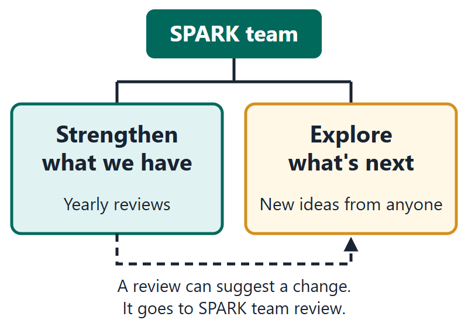
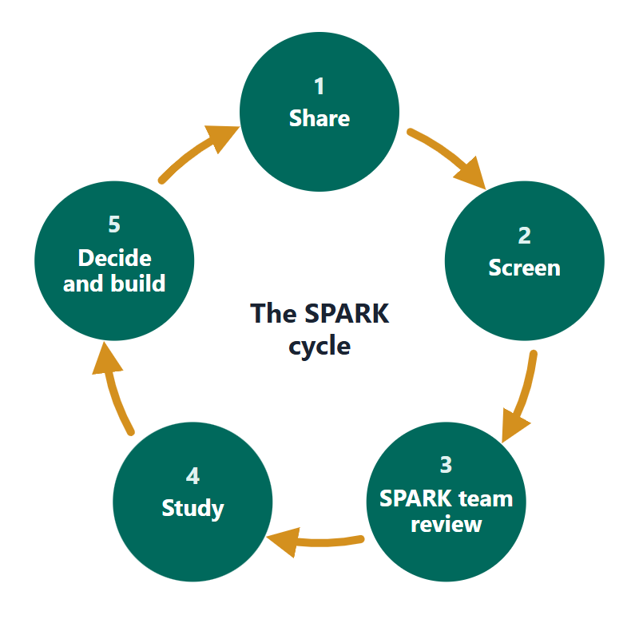

How SPARK works
SPARK is the SUSD team that looks after the district's specialty schools and learning environments. Its work has two parts. It helps what SUSD already offers grow stronger. And it studies new ideas, choosing a few each year to develop well.
This site keeps the record of ideas. People carry them forward: principals, teachers, students, families, and partners who champion an idea with their school community.
Two parts of SPARK's work
- Strengthen what we have. SPARK reviews each specialty school and program once a year.
- Explore what's next. Anyone can share an idea. The five steps below show what happens to it.
- Where the two meet: a review can suggest expanding or redesigning something that exists. That suggestion goes to SPARK team review, like a new idea.

Strengthen what we have
- Look closely. Each year a SPARK group looks at each specialty school and program. It uses SUSD's ten Quality Indicators and public information.
- Name strengths and next steps. The group agrees on strengths, room to grow, and ways the district can help the school.
- Report. The annual SPARK report to district leadership sums up the reviews and recommendations.
These reviews are not listed on What we're working on.
Explore what's next: the cycle in five steps
- Share. Anyone sends an idea through the form. It gets an ID and a confirmation.
- Screen. Within 3 weeks, the screener checks for overlap and fit. Outcome: advanced, merged, redirected, outside scope, or held.
- SPARK team review. Quarterly, the team scores advanced ideas: selected for study, develop further, or archived with a reason. In January it selects that year's two or three studies.
- Study. A design team studies each selected idea for 4 to 8 weeks and writes a one-page summary. Decision: pilot, design phase, deferred, or declined.
- Decide and build. The Governing Board acts when required. Pilots and new learning environments are built and reported on this site.

What you can expect from us
| What | When |
|---|---|
| Confirmation | Within 2 school days |
| Screening reply | Within 3 weeks (15 school days). June and July ideas: in August |
| SPARK team review | Quarterly: mid-October, January, April, July |
| Selection for full study | January review; two or three ideas a year |
| Study | 4 to 8 weeks; one-page public summary |
| Site update and "You said, we did" | Within 2 weeks of each review; counts monthly |
| Held ideas looked at again | Next January review |
Who does what
| Role | Who | What they do |
|---|---|---|
| School SPARK contact | The principal or a designee at every school | Leads the local conversation about ideas with the school community. Knows the link and hands it out. Handles local ideas, or says "send it to SPARK and mention you talked to me." No forms, no reviewing. |
| Champions | Principals, teachers, families, students, and partners who care about an idea | Carry the idea forward with their school community. Share support notes and join design teams when invited. |
| Screener | The Assistant Superintendent for Educational Services or a designee, plus a named backup | Reads new ideas weekly. Checks for overlap. Replies within 3 weeks. Writes each public title and summary. |
| SPARK team | About 38 principals, teachers, coordinators, district staff, parents, and community members | Meets quarterly. Scores advanced ideas. Selects two or three a year in January. Presents in May. |
| Design teams | Small groups from the SPARK team and the schools involved | Study one idea for 4 to 8 weeks. Read support notes. Write the summary and the "We did" line. |
| Governing Board | SUSD's elected board | Receives a quarterly note and an annual report. Votes when a decision requires it. |
What we look for
Six questions. Together they cover SUSD's ten Quality Indicators, shown in brackets.
- Does it fit SUSD's direction? (Alignment and Purpose)
- Do students and families want it, and can every student reach it? (Equity and Accessibility; Impact on Students and Staff)
- Is the teaching sound and backed by evidence? (Evidence and Effectiveness; Data and Evaluation)
- Can we run it: staff, space, training, timing? (Implementation Feasibility; Training and Support)
- Can we afford it now, and in five years? (Cost and Resources; Sustainability)
- Do partners and the community back it? (Community Partners and Stakeholder Support)
Why most ideas are not studied
SPARK selects two or three ideas a year on purpose. A full study takes a design team 4 to 8 weeks and pulls principals and teachers from their schools. Studying ten ideas badly helps no one. So most ideas end at screening or SPARK team review, with a reason and a pointer to who can act. That is not a judgment on the idea. Many good ideas are held and looked at again the next January. Others are merged, so several voices build one stronger case.
The SPARK year
| When | What happens |
|---|---|
| August | Summer ideas screened. New cycle opens. |
| Mid-October | SPARK team review. |
| Mid-January | SPARK team review. Two or three ideas selected for study. |
| February to April | Design teams study. Mid-April: SPARK team review. |
| May | Studies presented to the SPARK team. |
| June | Governing Board briefed. Annual SPARK report Planned: June 2027 |
| Mid-July | SPARK team review. |
Who is on SPARK and how to join
SPARK has about 38 members, led by the Assistant Superintendent for Educational Services. It meets quarterly; subgroups meet more often. Want to join, or help a design team?
Words we use
- Idea: anything sent through the form. It can be a new school model, a new program at a school, or a change to something that exists.
- Learning environment: a school, school model, or pathway that shapes how students learn.
- Specialty school or program: a school or program built around a theme. SUSD uses three kinds; see Our programs.
- Champion: a person who carries an idea forward with their school community.
- Screening: the first check of an idea, within 3 weeks.
- SPARK team review: the quarterly meeting where advanced ideas are scored.
- Design team: the small group that studies one selected idea.
- Held: an idea SPARK cannot take up now, with a date to look again.
Something unclear on this site? Tell us.
Planned: launch
Download the full SPARK framework (PDF)
The belief statement, Areas of Focus, Quality Indicators, and scorecard.
Planned: launch